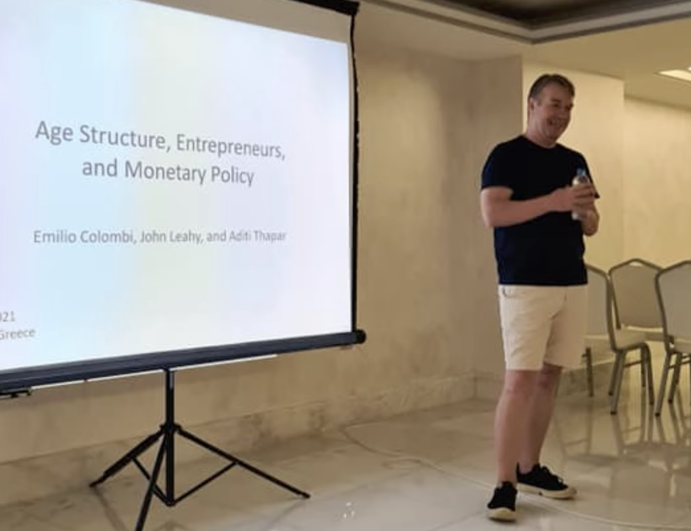

2026 Hydra Workshop on Dynamic Macroeconomics in Memory of John Leahy, 25-26 September 2026, Hydra, Greece
2026-09-15

I will be chairing a session at this year's Hydra workshop. The workshop has been organised for many years (25+), first by Tryphon Kollitzas and for many years now by Harris Dellas. The workshop assembles a lot of incredibly good and friendly macroeconomists in incredible places (often in Greece but not only, often in Hydra but not only).
This year will have a particular sweet and sour taste as it will be the first workshop without John Leahy. John tragically passed away this year. Life must go, but it is hard.
This year, the program will be:
Thursday, 24 September
20:15: Welcome reception, Hydroussa Hotel
Day 1 (Friday, 25 September)
Chair: Harris Dellas (KBI, U. Surrey, FRB St Louis)
9:45-10:45: “Key Workers and Funding Horizons” — Nobu Kiyotaki (Princeton), Angus Foulis (Bank of England), John Moore (Edinburgh), Gabor Pinter (BIS), Shengxing Zhang (LSE)
Discussant: Rob Shimer (Chicago)
Chair: Franck Portier (UCL)
10:45-11:45: “An Odd Approximation of Inflation for State-Dependent Pricing Models” — Mark Gertler (NYU), Mahdi Ebsim (UC Berkeley), Luca Gagliardone (ECB), Simone Lenzu (NYU Stern / FRB New York), Joris Tielens (National Bank of Belgium)
Discussant: Galo Nuno (Banco de España)
11:45-12:10: Coffee break
Chair: Tryphon Kollitzas (AUEB)
12:10-13:10: “Finance as Staged Discovery” — Andrew Caplin (NYU)
Discussant: V. V. Chari (Minnesota)
13:15-14:15: Lunch
Chair: David Andolfatto (Miami)
14:15-15:15: “Uncovering the costs of high inflation” — Francesco Lippi (LUISS & EIEF), Ken Miyahara (Kobe University), Alberto Cavallo (Harvard)
Discussant: Anton Nakov (ECB)
15:15-15:30: Break
Chair: Morten Ravn (UCL)
15:30-16:30: “When the Unthinkable Happens: Perceptions of Monetary Policy in Tail Events” — Fiorella De Fiore (BIS), Christiane Baumeister (Notre Dame), Jasmine Xiao (Notre Dame)
Discussant: Victor Rios-Rull (Penn)
20:00: Dinner — Taverna Christina, Kamini Hydra
Day 2 (Saturday, 26 September)
Chair: Dimitris Malliaropoulos (Bank of Greece)
10:00-11:00: “Sophisticated Borrowing Constraints and Macroeconomic Dynamics” — Chen Lian (Berkeley), Mahdi Ebsim (Berkeley), Yueran Ma (Chicago Booth), Pablo Ottonello (Michigan/Maryland), Diego Perez (NYU)
Discussant: Harald Uhlig (Chicago)
Chair: Fabrice Collard (Toulouse)
11:00-12:00: “Importing Aggregate Demand” — Christian Wolf (MIT), Chen Lian (Berkeley), Dmitry Mukhin (LSE)
Discussant: Ludwig Straub (Harvard)
12:00-12:20: Coffee Break
Chair: Carlos Garriga (Federal Reserve Bank of St Louis)
12:20-13:20: Policy Panel — “Policy challenges: Common or country specific?” — Megan Greene (Bank of England), Asgeir Jonsson (Central Bank of Iceland), Chris Waller (FRB, Board of Governors), Carolyn Wilkins (Bank of England / Princeton)
13:30-14:40: Lunch
20:00: Dinner — Techne Restaurant
Organizer: Harris Dellas (U. Surrey, KBI, FRB St Louis)
Sponsors: Bank of Finland, Bank of Greece, Central Bank of Iceland, European Central Bank, KBI, Swiss National Bank